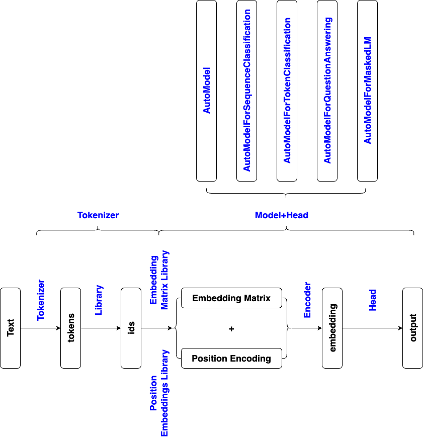

from transformers import AutoTokenizer
model_name = "bert-base-uncased"
tokenizer = AutoTokenizer.from_pretrained(model_name)
text = "I've been waiting for a HuggingFace course my whole life."
# convert text to ids
ids = tokenizer(text, return_tensors='pt')
# convert ids to text
text = tokenizer.decode(ids.input_ids[0])
# convert ids to tokens
tokens = tokenizer.convert_ids_to_tokens(ids.input_ids[0])
# convert text to tokens
tokens = tokenizer.tokenize(text)
# convert tokens to ids
ids = tokenizer.convert_tokens_to_ids(tokens)
# convert tokens to text
text = tokenizer.convert_tokens_to_string(tokens)
from transformers import AutoModel
model_name = "bert-base-uncased"
model = AutoModel.from_pretrained(model_name)
# embedding library
model.embeddings.word_embeddings.weight.data # 30522*768, library contains 30522 tokens, 1*768 vector for each token
# position embedding library
model.embeddings.position_embeddings.weight.data # 512*768, take 512 tokens, 1*512 vector for each token